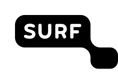
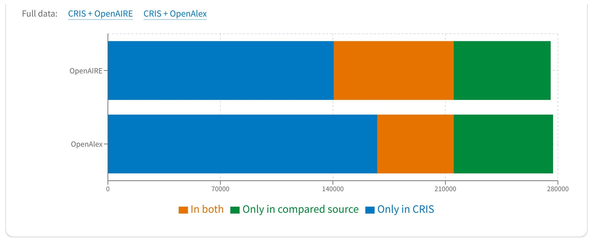
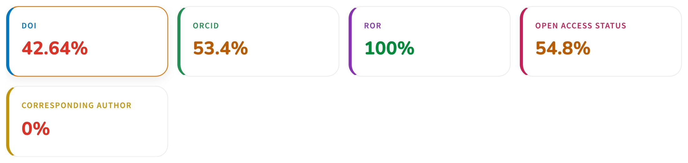
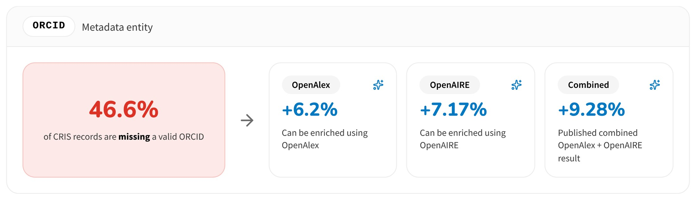
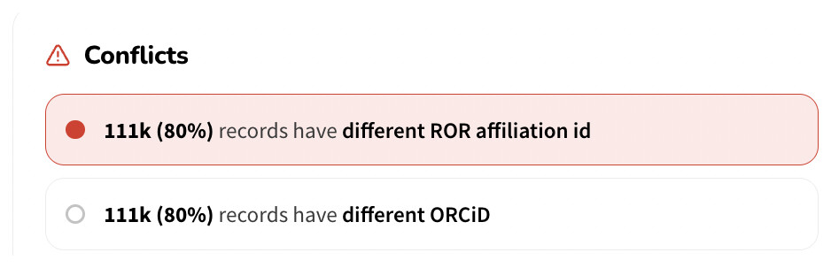
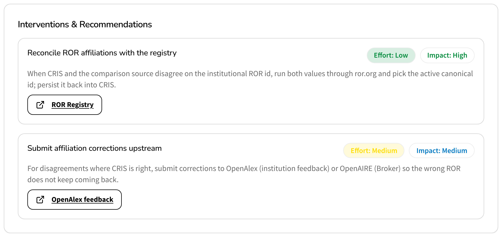

Barcelona Declaration Conference · Berlin · 24–25 November 2026
Better metadata, better decisions
How the Dutch Barcelona Declaration signatories monitor and improve their open research information, so their analyses and strategic reports rest on reliable data

Why it matters
We don't fill in ORCIDs for the sake of ORCIDs. Better metadata gives institutions analyses and strategic reports they can trust.
Built with and for the Dutch Barcelona Declaration signatories
Their research intelligence, library and CRIS teams depend on high-quality data in their daily work. They shaped every step: they brought 14 use cases, prioritised the metadata, tested the dashboard and now use it to set goals and choose interventions.
- University of Amsterdam
- Maastricht University
- University of Groningen
- Hanze University of Applied Sciences Groningen
- Amsterdam University of Applied Sciences
- Vrije Universiteit Amsterdam
- University of Twente
- Protestant Theological University
- Amsterdam UMC, location VUmc
- Eindhoven University of Technology
- Utrecht University
- Open University
- Amsterdam UMC, location AMC
- Erasmus University Rotterdam
- NHTV Breda University of Applied Sciences
- Royal Netherlands Academy of Arts and Sciences
- University of Humanistic Studies
- Tilburg University
The 18 organisations taking part in the ORI dashboard (ori-dashboard.surf.nl, November 2026)
Four questions behind every reliable reportLive views for one participating institution, ori-dashboard.surf.nl, November 2026. Accuracy: view from the dashboard mockup with illustrative data, as the live feed does not publish it yet.
Is all our output in the open indexes?
So open access monitoring counts everything.

Can we link output to people and places?
So analyses per researcher, group or partner hold up.

What can other sources fill in?
So the CRIS improves with less manual work.

Can we trust the affiliations?
So reports and benchmarks credit the right institution.

From gap to actionThe dashboard does not stop at the gap: it suggests the interventions that close it, scored on effort and impact
In the dashboard

Mockup view. The example interventions come from the metrics report: a starting point for discussion, not a fixed list.
Effort × impact: example interventions
- Mandate ORCID at staff onboarding
- Sync OA status from Unpaywall
- Reconcile RORs with the registry
- Add a DOI lookup to the CRIS deposit form
- Mint DOIs for CRIS-only records
- Backfill ROR ids on affiliations
- Capture the corresponding author at deposit
- Match grant DOIs from OpenAIRE
Which approach works for you?
What did you try, what did it cost and what did it bring? Let's compare approaches between the signatories.
Together we build a shared list of interventions, each scored on effort and impact.
Share yours at this poster, or online: scan to add your intervention